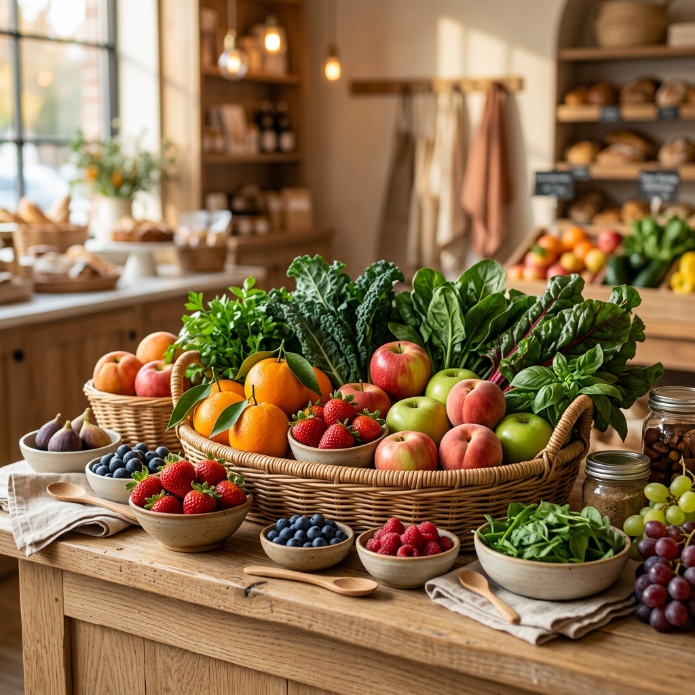
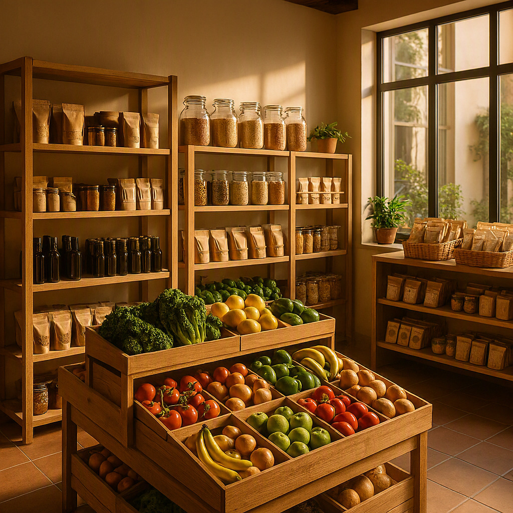
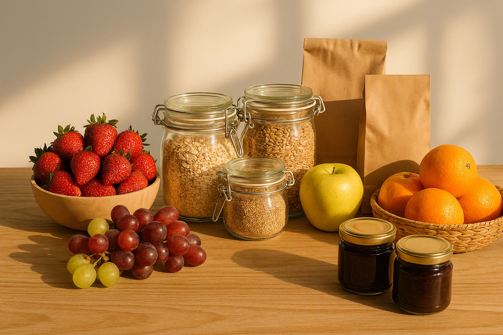
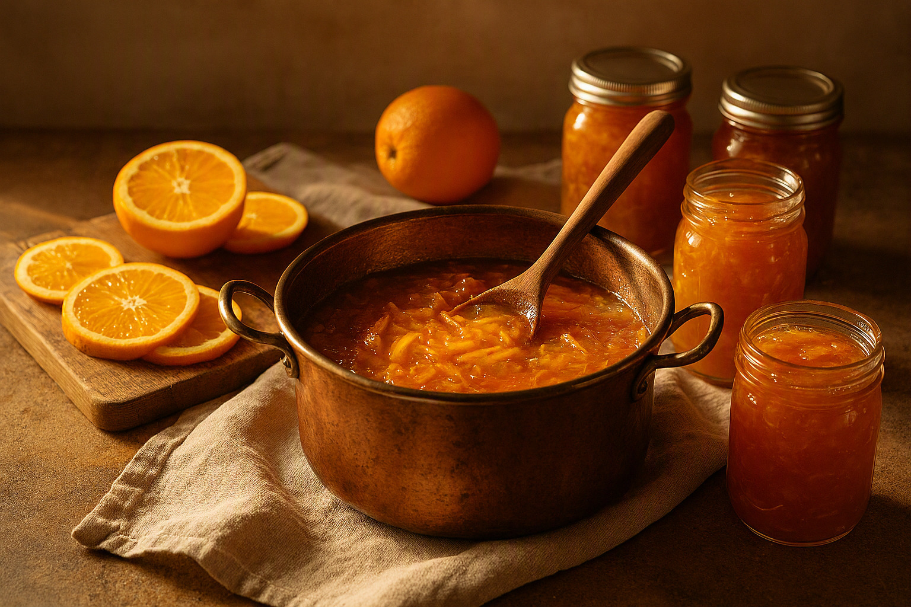
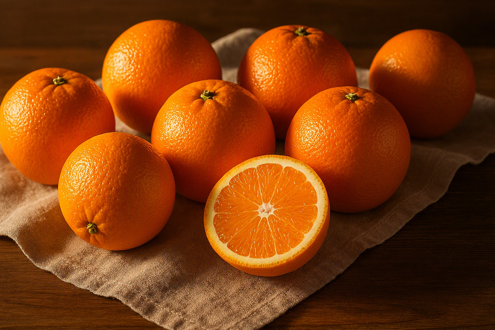
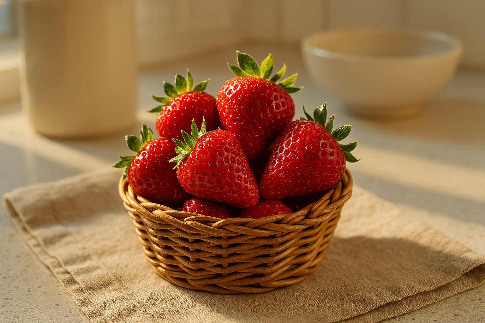
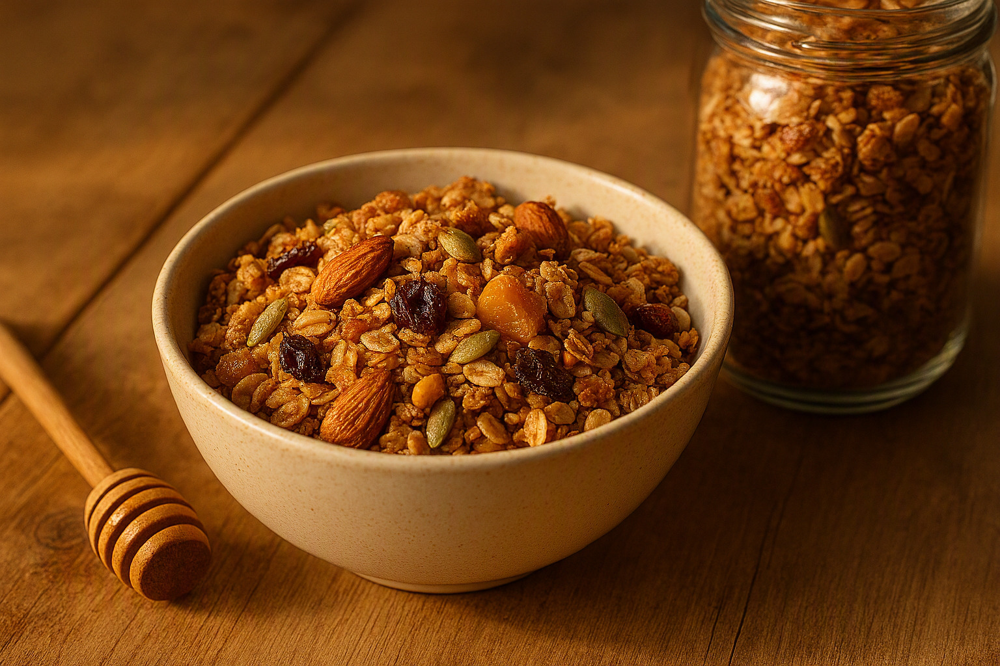
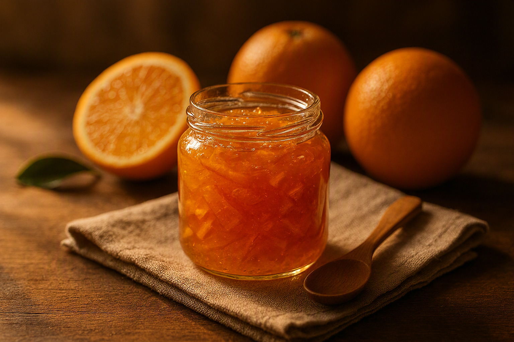

Frutas frescas
Variedades de estación elegidas por aroma, color, punto de maduración y trazabilidad.
Frescura seleccionada todos los días
En Cosecha Dorada reunimos frutas de estación, productos integrales y preparaciones artesanales con origen responsable, textura honesta y sabor memorable.

Nuestro compromiso
Cuidamos cada selección desde el origen hasta tu mesa. Trabajamos con productores responsables, pequeños elaboradores y proveedores que respetan la temporada, la tierra y el sabor auténtico.
El resultado es una experiencia cercana y confiable: ingredientes frescos, empaques claros, recetas honestas y una atención pensada para familias, deportistas y personas que eligen comer mejor.

Selección curada

Variedades de estación elegidas por aroma, color, punto de maduración y trazabilidad.
Granolas, semillas, cereales y mezclas nutritivas para desayunos completos y prácticos.
Opciones envasadas con ingredientes claros, procesos limpios y etiquetas fáciles de entender.
Preparaciones en pequeños lotes, con fruta real, dulzor equilibrado y textura casera.

Hecho con paciencia
Nuestras mermeladas se preparan en lotes pequeños para conservar cuerpo, brillo y aroma. Son ideales para desayunos especiales, tablas de quesos, yogures naturales o regalos con carácter artesanal.
Descubrir sabores artesanalesFavoritos de la semana

Jugosas, aromáticas y seleccionadas por dulzor natural para jugos, meriendas y cocina diaria.
$2.900/kg
Firmes, perfumadas y listas para postres, smoothies, bowls de yogur o desayunos familiares.
$4.600/bandeja
Mezcla crocante de avena, semillas y frutos secos, horneada lentamente y sin excesos.
$5.200/unidad
Textura brillante, cáscara fina y dulzor balanceado para panes, quesos y repostería casera.
$3.800/frascoPor qué elegirnos
Revisamos textura, frescura y origen para que cada compra llegue con estándar constante.
Priorizamos productos con ingredientes reconocibles, procesos responsables y comunicación transparente.
Elegimos proveedores que valoran el suelo, la temporada y la reducción de desperdicio.
Las recetas de pequeños lotes mantienen carácter, aroma y cuidado humano en cada frasco.
Clientes que vuelven
“Las naranjas llegan siempre con el punto justo y la granola se volvió parte de mis desayunos de entrenamiento. Se nota que seleccionan con criterio.”
“Compro para mi familia porque encuentro productos claros, frescos y con muy buena atención. La mermelada de naranja parece hecha en casa, pero con presentación impecable.”
“Para el menú de mi cafetería necesito consistencia. Cosecha Dorada me entrega fruta linda, sabrosa y confiable, ideal para bowls y pastelería saludable.”
Hablemos
Completa el formulario y nuestro equipo te ayudará a elegir frutas, productos integrales o regalos artesanales según tu necesidad.